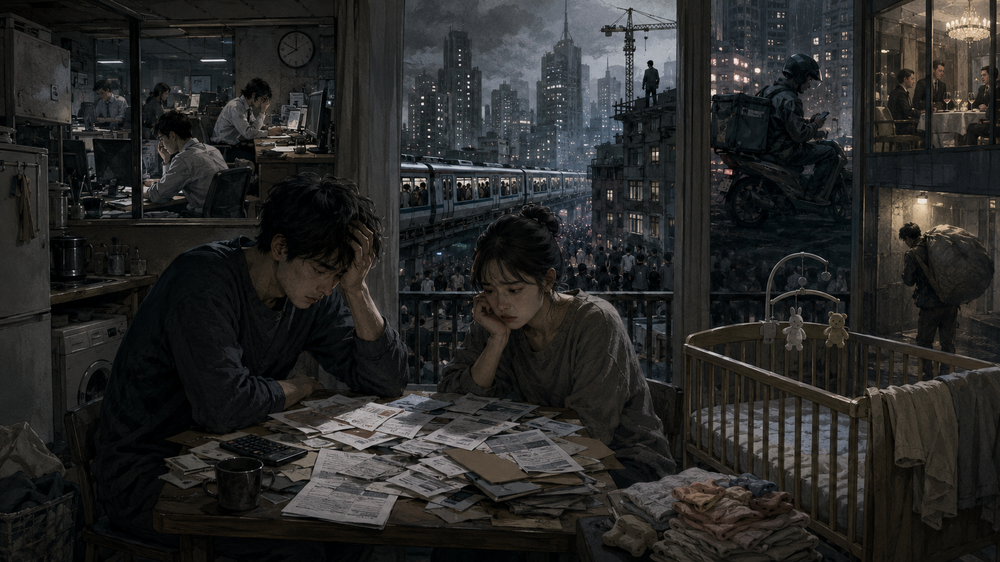

反出生主義：「子供を生むべきではない」
なぜそのような主張が増えているのか
競争社会の疲労、少子化、そして聖書が示す希望について考えます。
近年、先進国を中心に「反出生主義」という思想が注目されるようになっています。
反出生主義とは何か
反出生主義とは、簡単に言えば「子どもを新しく生まれさせるべきではない」と考える思想です。
人間は生まれれば、病気、老い、死、貧困、孤独、失敗、競争、差別など、さまざまな苦しみを経験します。ならば、そもそも新しい命をこの世界に生み出さない方がよい、という考え方です。
率直に言えば、これはかなり極端な思想です。
普通に考えれば、人が生まれることには喜びもあります。家族の愛情、友情、成長、創作、自然の美しさ、信仰、希望など、人生には苦しみだけでは説明できない価値があります。
それにもかかわらず、反出生主義が一部で支持されるようになっているのは、現代の先進国社会が人々に大きな疲労感と絶望感を与えているからではないでしょうか。

少子化問題との関係
この思想は、少子化問題とも深く関係しています。
少子化というと、よく「若者が結婚しなくなった」「子どもを欲しがらなくなった」「価値観が変わった」と説明されます。もちろんそれも一部にはあるでしょう。
しかし、もっと根本には「子どもを育てる自信が持てない社会」になってしまったという問題があります。
競争社会の中で失われる自信
資本主義の競争社会では、労働環境そのものが競争です。
よい学校に入り、よい会社に入り、安定した収入を得て、住宅を確保し、教育費を用意し、将来の不安にも備えなければなりません。会社では成果を求められ、長時間労働や人間関係のストレスもあります。非正規雇用や低賃金の人であれば、なおさら生活の見通しは立てにくくなります。
そのような社会では、子どもを持つことが大きな責任になります。
- 自分一人が生きるだけでも精一杯なのに、子どもを育てられるのか
- 十分な教育を与えられるのか
- 貧しい思いをさせてしまうのではないか
- 社会で負けた自分が、親になってよいのか
こう考える人が増えても不思議ではありません。
本当は子どもが欲しい。しかし、社会的に成功していない自分には、子どもを持つ資格がないように感じてしまう。この感覚は、現代社会の少子化の大きな原因の一つだと思います。
恨みが思想に変わる時
そして、そこからさらに暗い方向へ進むと、反出生主義につながります。
社会の競争に負けたと感じる人は、自分の人生を肯定しにくくなります。自分は社会から十分に報われなかった。努力しても豊かになれなかった。家庭を持つことも、子どもを育てることも難しい。そう感じた時、人は社会そのものを恨むようになります。
やがて、その恨みは「こんな世界に子どもを生むべきではない」という思想に変わります。
これは単なる理性的な哲学というより、競争社会の中で傷ついた人々の感情が混ざった思想ではないでしょうか。
社会の勝利者たちは結婚し、子どもを持ち、教育にもお金をかける。一方で、社会的に敗北したと感じる人々は、子どもを持つことをあきらめる。その不公平感が、社会そのものへの怒りとなり、反出生主義を支持する心理につながっていくのです。
もちろん、反出生主義を支持する人すべてが恨みだけで考えているわけではありません。中には、真剣に倫理の問題として考えている人もいます。
「苦しむ可能性のある命を、本人の同意なしに生み出してよいのか」という問いには、考えさせられる部分もあります。
それでも危うい思想である理由
しかし、それでも反出生主義は危険な思想です。
なぜなら、人生の苦しみだけを見て、人生の喜びや価値を見失いやすいからです。
人間は苦しむ存在ですが、同時に愛する存在でもあります。助け合い、学び、成長し、希望を持つ存在でもあります。苦しみがあるからといって、誕生そのものを否定してしまうのは、あまりにも暗い結論です。
問うべきなのは、「なぜ現代社会は、人々に子どもを持つ自信を失わせているのか」ということです。
長時間労働、低賃金、不安定雇用、高い教育費、住宅費、孤立した育児、将来不安。これらが積み重なれば、若い人々が子どもを持つことをためらうのは当然です。
反出生主義は、とんでもない主義です。しかし、それが生まれてくる背景には、現代の競争社会が人々を追い詰めている現実があります。
少子化を本気で解決したいなら、「子どもを産め」と言うだけでは不十分です。人々が安心して働き、暮らし、家庭を築ける社会にしなければなりません。
子どもを持つことが「ぜいたく」や「勝者だけの特権」のように感じられる社会では、少子化は止まりません。そして、その社会の影の部分から、反出生主義のような暗い思想が生まれてくるのです。
聖書が示す希望
しかし、聖書は絶望ではなく希望を示しています。
今の競争社会では、弱い立場の人が追い詰められ、「子どもを持つ自信がない」と感じることがあります。しかし、神の王国は、そのような人々を見捨てません。
反出生主義は、現代社会の苦しみや絶望を映し出しているのかもしれません。しかし、本当に希望を置くべきなのは、人間の競争社会ではなく、立場の低い人を守り、公正な世界を実現する神の王国です。